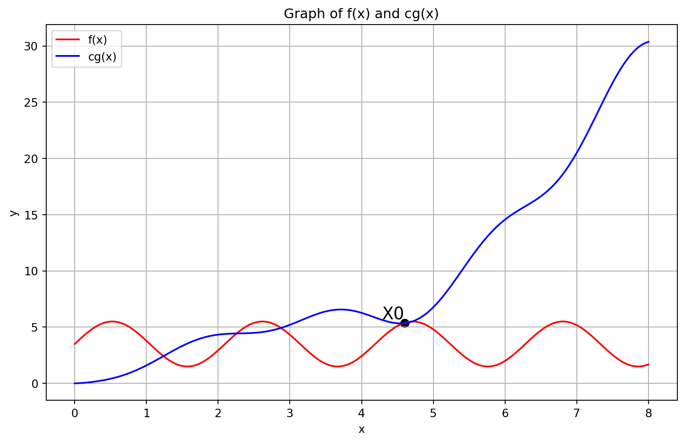

PDSA - Week 2
Lecture 2.1: Analysis of Algorithms
Measuring performance
- Example of validating SIM cards against Aadhaar data
- Naive approach takes thousands of years
- Smarter solution takes a few minutes
- Naive approach takes thousands of years
- Two main resources of interest
- Running time - how long the algorithm takes
- Space - memory requirement
- Time depends on processing power
- Impossible to change for given hardware
- Enhancing hardware has only a limited impact at a practical level
- Storage is limited by available memory
- Easier to configure, augment
- Typically, we focus on time rather than space
Input size
- Running time depends on input size
- Larger arrays will take longer to sort
- Measure time efficiency as a function of input size
- Input size n
- Running time t(n)
- Different inputs of the same size n can have different running times
Example 1: SIM cards vs Aadhaar cards - n \approx 10^9 - number of cards - Naive algorithm: t(n) \approx n^2 - Clever algorithm: t(n) \approx n \log_{2} n - log_{2}n - number of times you need to divide n by 2 to reach 1 - log_{2}n = k \implies n = 2^k
Example 2: Video game - Several objects on screen - Basic step: find closest pair of objects - n objects - naive algorithm is n^2 - For each pair of objects, calculate distance - Report minimum distance across all pairs - There is a clever algorithm that takes n \log_{2} n
- High resolution gaming console may have 4000 \times 2000 pixels
- 8 \times 10^6 points - 8 million
- Suppose we have 100,000 = 1 \times 10^5 objects
- Naive algorithm takes 10^{10} steps
- 1000 seconds, or 16.7 minutes in Python
- Unacceptable for a video game!
- \log_{2}100,000 is under 20, so n \log_{2}n takes a fraction of a second
Orders of magnitude
- When comparing t(n), focus on the order of magnitude
- Ignore constants factors
- f(n) = n^3 eventually grows faster than g(n) = 5000n^2
- For small values of n, f(n) < g(n)
- After n=5000, f(n) overtakes g(n)
- Asymptotic complexity
- What happens in the limit as n becomes large
- Typical growth functions
- Is t(n) proportional to \log n, …, n^2, n^3, …, 2^n?
- Note: \log n means \log_{2}n by default
- Logarithmic, polynomial, exponential, …
- Is t(n) proportional to \log n, …, n^2, n^3, …, 2^n?
| Input size | \log n | n | n \log n | n^2 | n^3 | 2^n | n! |
|---|---|---|---|---|---|---|---|
| 10 | 3.3 | 10 | 33 | 100 | 1000 | 1000 | 10^6 |
| 100 | 6.6 | 100 | 660 | 10^4 | 10^6 | 10^{30} | 10^{157} |
| 1000 | 10 | 1000 | 10^4 | 10^6 | 10^9 | - | - |
| 10^4 | 13 | 10^4 | 10^5 | 10^8 | 10^{12} | - | - |
| 10^5 | 17 | 10^5 | 10^6 | 10^{10} | - | - | - |
| 10^6 | 20 | 10^6 | 10^7 | 10^{12} | - | - | - |
| 10^7 | 23 | 10^7 | 10^8 | - | - | - | - |
| 10^8 | 27 | 10^8 | 10^9 | - | - | - | - |
| 10^9 | 30 | 10^9 | 10^{10} | - | - | - | - |
| 10^{10} | 33 | 10^{10} | 10^{11} | - | - | - | - |
Measuring running time
Analysis should be independent of the underlying hardware
- Don’t use actual time
- Measure in terms of basic operations
Typical basic operations
- Compare two values
- Assign a value to a variable
Exchange a pair of values?
(x,y)=(y,x)t=xx=yy=t- If we ignore constants, focus on orders of magnitude, both are within a factor of 3
- Need not be very precise about defining basic operations
What is the input size
- Typically a natural parameter
- Size of a list/array that we want to search or sort
- Number of objects we want to rearrange
- Number of vertices and number of edges in a graph
- What about numeric problems? Is n a prime?
- Magnitude of n is not the correct measure
- Arithmetic operations are performed digit by digit
- Addition with carry, subtraction with borrow, multiplication, long division…
- Number of digits is a natural measure of input size
- Same as log_{b}n, when we write n in base b
Which inputs should we consider?
- Performance varies across input instances
- By luck, the value we are searching for is the first element we examine in an array
- Ideally, want the “average” behaviour
- Difficult to compute
- Average over what? Are all inputs equally likely?
- Need a probability distribution over inputs
- Instead, worst case input
- Input that forces algorithm to take the longest time
- Search for a value that is not present in an unsorted list
- Must scan all elements
- Pessimistic - worst case may be rare
- Upper bound for worst case guarantees good performance
- Input that forces algorithm to take the longest time
Summary
- Two important parameters when measuring algorithm performance
- Running time, memory requirement (space)
- We mainly focus on time
- Running time t(n) is a function of input size n
- Compare algorithms by their order of magnitude
- Asymptotic complexity, as n becomes large
- From running time, we can estimate feasible input sizes
- We focus on worst case inputs
- Pessimistic, but easier to compute than average case
- Upper bound on worst case gives us an overall guarantee of performance
Lecture 2.2: Comparing Orders of Magnitude
Orders of magnitude
- When comparing t(n), focus on orders of magnitude
- Ignore constant factors
- f(n)=n^3 eventually dominates g(n)=5000n^2
- How do we compare functions with respect to orders of magnitude?
Upper bounds
- f(x) is said to be O(g(x)) if we can find constants c and x_0 such that c \cdot g(x) is an upper bound for f(x) for x beyond x_0
- f(x) \leq cg(x) for every x \geq x_0
Examples
100n+5 is O(n^2)
- 100n+5 \leq 100n+n=101n, for n \geq 5
- 101n \leq 101n^2
- Choose n_0=5 and c=101
Alternatively
- 100n+5 \leq 100n +5n =105n, for n \geq 1
- 105n \leq 105n^2
- Choose n_0=1 and c=105
Choice of c and n_0 is not unique
100n^2 + 20n +5 is O(n^2)
- 100n^2 + 20n +5 \leq 100n^2 + 20n^2 +5n^2, for n \geq 1
- 100n^2 + 20n^2 +5n^2 \leq 125n^2, for n \geq 1
- Choose n_0=1 and c=125
What matters is the highest term
- 20n+5 is dominated by 100n^2
n^3 is not O(n^2)
- No matter what c we choose, cn^2 will be dominated by n^3 for n \geq c
Useful properties
- If f_{1}(n) is O(g_{1}(n)) and f_{2}(n) is O(g_{2}(n)), then f_{1}(n)+f_{2}(n) is O(\max(g_{1}(n),g_{2}(n)))
- Proof
- f_{1}(n) \leq c_{1}g_{1}(n) for n \geq n_{1}
- f_{2}(n) \leq c_{2}g_{2}(n) for n \geq n_{2}
- Let c_{3} = \max(c_{1},c_{2}), n_{3} = \max(n_{1},n_{2})
- For n \geq n_{3}, f_{1}(n)+f_{2}(n)
- \leq c_{1}g_{1}(n)+c_{2}g_{2}(n)
- \leq c_{3}g_{1}(n)+c_{3}g_{2}(n)
- \leq 2c_{3}(\max(g_{1}(n),g_{2}(n)))
- Algorithm has two phases
- Phase A takes time O(g_{A}(n))
- Phase B takes time O(g_{B}(n))
- Algorithm as a whole takes time \max(O(g_{A}(n),g_{B}(n)))
- Least efficient phase is the upper bound for the whole algorithm
Lower bounds
- f(x) is said to be \Omega(g(x)) if we can find constants c and x_0 such that c \cdot g(x) is a lower bound for f(x) for x beyond x_0
- f(x) \geq cg(x) for every x \geq x_0
- n^3 is \Omega(n^2)
- n^3 > n^2 for all n, so n_0=1, c=1
- Typically we establish lower bounds for a problem rather than an individual algorithm
- If we sort a list by comparing elements and swapping them, we require \Omega(n \log n) comparisons
- This is independent of the sorting algorithm
Tight bounds
- f(x) is said to be \Theta(g(x)) if f(x) is both O(g(x)) and \Omega(g(x))
- Find constants c_1, c_2, x_0 such that c_{1}g(x) \leq f(x) \leq c_{2}g(x) for every x \geq x_0
- \frac{n(n-1)}{2} is \Theta(n^2)
- Upper bound
- \frac{n(n-1)}{2} = \frac{n^2}{2} - \frac{n}{2} \leq \frac{n^2}{2} for all n \geq 0
- Lower bound
- \frac{n(n-1)}{2} = \frac{n^2}{2} - \frac{n}{2} \geq \frac{n^2}{2} - (\frac{n}{2} \times \frac{n}{2}) \geq \frac{n^2}{4} for n \geq 2
- Choose n_0 = 2, c_1 = \frac{1}{4}, c_2 = \frac{1}{2}
- Upper bound
Summary
- f(n) is O(g(n)) means f(n) is bounded above by g(n)
- Useful to describe asymptotic worst case running time
- f(n) is \Omega(g(n)) means f(n) is bounded below by g(n)
- Typically used for a problem as a whole, rather than an individual algorithm
- f(n) is \Theta(g(n)) means f(n) is bounded both above and below by g(n)
- We have found an optimal algorithm for the problem
Lecture 2.3: Calculating Complexity - Examples
Example 1
Find the maximum element in a list
- Input size is the length of the list
- Single loop scans all elements
- Always takes n steps
- Overall time is O(n)
def maxElement(L):
maxval = L[0]
for i in range(len(L)):
if L[i] > maxval:
maxval = L[i]
return maxvalExample 2
Check whether a list contains duplicates
- Input size is the length of the list
- Nested loop scans all pairs of elements
- A duplicate may be found in the very first iteration
- Worst case - no duplicates, both loops run fully
- Time is (n-1)+(n-2)+...+1=\frac{n(n-1)}{2}
- Overall time is O(n^2)
def noDuplicates(L):
for i in range(len(L)):
for j in range(i+1, len(L)):
if L[i] == L[j]:
return False
return TrueExample 3
Matrix multiplication
- Matrix is represented as a list of lists
- \begin{pmatrix}1 & 2 & 3\\4 & 5 & 6\end{pmatrix}
[[1, 2, 3], [4, 5, 6]]
- Input matrices have size m \times n, n \times p
- Output matrix is m \times p
- Three nested loops
- Overall time is O(mnp) - O(n^3) if both are n \times n
def matrixMultiply(A, B):
(m, n, p) = (len(A), len(B), len(B[0]))
C = [[0 for i in range(p)]
for j in range(m)]
for i in range(m):
for j in range(p):
for k in range(n):
C[i][j] = C[i][j] + A[i][k] * B[k][j]
return CExample 4
Number of bits in binary representation of n
- \log n steps for n to reach 1
- For number theoretic problems, input size is number of digits
- This algorithm is linear in input size
def numberOfBits(n):
count = 1
while n > 1:
count += 1
n = n // 2
return countExample 5
Towers of Hanoi
- Three pegs A, B, C
- Move n disks from A to B, use C as transit peg
- Never place a larger disk on a smaller one
- Recursive solution
- Move n-1 disks from A to C, use B as transit peg
- Move the largest disk from A to B
- Move n-1 disks from C to B, use A as transit peg
Example 5 (contd.)
- Recurrence
- M(n) - number of moves to transfer n disks
- M(1) = 1
- M(n) = M(n-1) + 1 + M(n-1) = 2M(n-1)+1
- Unwind and solve \begin{aligned} M( n) & =\ 2M( n-1) +1\\ & =\ 2( 2M( n-2) +1) +1=\ 2^{2} M( n-2) +( 2+1)\\ & =\ 2^{2}( 2M( n-3) +1) +( 2+1) =\ 2^{3} M( n-3) \ +\ ( 4+2+1)\\ & \dotsc \\ & =\ 2^{k} M( n-k) +\left( 2^{k} -1\right)\\ & \dotsc \\ & =\ 2^{n-1} M( 1) +\left( 2^{n-1} -1\right)\\ & =\ 2^{n-1} +2^{n-1} -1\\ & =\ 2^{n} -1 \end{aligned}
Summary
- Iterative programs
- Focus on loops
- Recursive programs
- Write and solve a recurrence
- Need to be clear about accounting for “basic” operations
Lecture 2.4: Searching in a List
Search problem
- Is a value
vpresent in a listl? - Naive solution scans the list
- Input size
n, the length of the list - Worst case is when
vis not inl - Worst case complexity is
O(n)
def naivesearch(v, l):
for x in l:
if v == x:
return True
return FalseSearching a sorted list
- What if
lis sorted in ascending order? - Compare
vwith the midpoint ofl- If midpoint is
v, the value is found - If
vis less than midpoint, search the first half - If
vgreater than midpoint, search the second half - Stop when the interval to search becomes empty
- If midpoint is
def binarysearch(v, l):
if l == []:
return False
m = len(l) // 2
if v == l[m]:
return True
if v < l[m]:
return binarysearch(v, l[:m])
else:
return binarysearch(v, l[m+1:])Binary search
- How long does this take?
- Each call halves the interval to search
- Stop when the interval becomes empty
- \log n - number of times to divide n by 2 to reach 1
- 1//2 =0, so next call reaches empty interval
- O(\log n) steps
Alternative calculation
- T(n): the time to search a list of length n
- If n=0, we exit, so T(0) = 1
- If n>0, T(n)=T(n//2)+1
- Recurrence for T(n)
- T(0) = 1
- T(n) = T(n//2) + 1, n>0
- Solve by “unwinding” \begin{aligned} T( n) & =\ T( n//2) +1\\ & =\ ( T( n//4) +1) +1=\ T\left( n//2^{2}\right) +\underbrace{1+1}_{2}\\ & =\ \dotsc \\ & =\ T\left( n//2^{k}\right) +\underbrace{1+\dots +1} _{k}\\ & =\ T( 1) +k,\ \text{for} \ k=\log n\\ & =\ ( T( 0) +1) +\log n\\ & =\ 2+\log n \end{aligned}
def bsearch(v, l):
if l == []:
return False
m = len(l) // 2
if v == l[m]:
return True
if v < l[m]:
return bsearch(v, l[:m])
else:
return bsearch(v, l[m+1:])Summary
- Search in an unsorted list takes time O(n)
- Need to scan the entire list
- Worst case is when the value is not in the list
- For a sorted list, binary search takes time O(\log n)
- Halve the interval to search each time
- In a sorted list, we can determine that
vis absent by examining just \log n values!
Lecture 2.5: Selection Sort
Sorting a list
- Sorting a list makes many other computations easier
- Binary search
- Finding the median
- Checking for duplicates
- Building a histogram
- How do we sort a list?
- You are the TA for a course
- Instructor has a pile of evaluated exam papers
- Papers in random order of marks
- Your task is to arrange the papers in descending order of marks
- Strategy 1
- Scan the entire pile and find the paper with the minimum marks
- Move this paper to a new pile
- Repeat with the remaining papers
- Add the paper with the next minimum marks to the second pile each time
- Eventually, the new pile is sorted in descending order of marks
Selection Sort
- Select the next element in sorted order
- Append it to the final sorted list
- Avoid using a second list
- Swap the minimum element into the first position
- Swap the second minimum element into the second position
- …
- Eventually the list is rearranged in place in ascending order
def SelectionSort(L):
n = len(L)
if n < 1:
return(L)
for i in range(n):
# Assume L[:i] is sorted
mpos = i
# mpos: position of minimum in L[i:]
for j in range(i+1,n):
if L[j] < L[mpos]:
mpos = j
# L[mpos] : smallest value in L[i:]
# Exchange L[mpos] and L[i]
(L[i],L[mpos]) = (L[mpos],L[i])
# Now L[:i+1] is sorted
return(L)Analysis of Selection Sort
- Correctness follows from the invariant
- Efficiency
- Outer loop runs n times
- Inner loop runs n-i times to find minimum in
L[i:] - T(n) = n + (n-1) + (n-2) + \ldots + 1
- T(n) = \frac{n(n+1)}{2}
- Selection sort is O(n^2)
def SelectionSort(L):
n = len(L)
if n < 1:
return(L)
for i in range(n):
# Assume L[:i] is sorted
mpos = i
# mpos: position of minimum in L[i:]
for j in range(i+1,n):
if L[j] < L[mpos]:
mpos = j
# L[mpos] : smallest value in L[i:]
# Exchange L[mpos] and L[i]
(L[i],L[mpos]) = (L[mpos],L[i])
# Now L[:i+1] is sorted
return(L)Summary
- Selection sort is an intuitive algorithm to sort a list
- Repeatedly find the minimum (or maximum) and append to sorted list
- Worst case complexity is O(n^2)
- Every input takes this much time
- No advantage even if list is arranged carefully before sorting
Lecture 2.6: Insertion Sort
Sorting a list
- You are the TA for a course
- Instructor has a pile of evaluated exam papers
- Papers in random order of marks
- Your task is to arrange the papers in descending order of marks
- Strategy 2
- Move the first paper to a new pile
- Second paper
- Lower marks than the first paper? Place it below the first paper in new pile
- Higher marks than the first paper? Place it above the first paper in new pile
- Third paper
- Insert into correct position with respect to the first two papers
- Do this for the remaining papers
- Insert each one into the correct position in the second pile
Insertion Sort
- Start building a new sorted list
- Pick next element and insert it into the sorted list
- An iterative formulation
- Assume
L[:i]is sorted - Insert
L[i]inL[:i]
- Assume
- A recursive formulation
- Inductively sort
L[:i] - Insert
L[i]inL[:i]
- Inductively sort
def InsertionSort(L):
n = len(L)
if n < 1:
return(L)
for i in range(n):
# Assume L[:i] is sorted
# Move L[i] to correct position in L[:i]
j = i
while(j > 0 and L[j] < L[j-1]):
(L[j],L[j-1]) = (L[j-1],L[j])
j = j-1
# Now L[:i+1] is sorted
return(L)Analysis of iterative Insertion Sort
- Correctness follows from the invariant
- Efficiency
- Outer loop iterates n times
- Inner loop: i steps to insert
L[i]inL[:i] - T(n) = 0 + 1 + · · · + (n − 1)
- T(n) = \frac{n(n-1)}{2}
- Insertion sort is O(n^2)
def InsertionSort(L):
n = len(L)
if n < 1:
return(L)
for i in range(n):
# Assume L[:i] is sorted
# Move L[i] to correct position in L[:i]
j = i
while(j > 0 and L[j] < L[j-1]):
(L[j],L[j-1]) = (L[j-1],L[j])
j = j-1
# Now L[:i+1] is sorted
return(L)Analysis of recursive Insertion Sort
- For input of size n, let
- TI(n) be the time taken by
Insert - TS(n) be the time taken by
ISort
- TI(n) be the time taken by
- First calculate TI(n) for
Insert- TI(0) = 1
- TI(n) = TI(n − 1) + 1
- Unwind to get TI(n) = n
- Set up a recurrence for TS(n)
- TS(0) = 1
- TS(n) = TS(n − 1) + TI(n − 1)
- Unwind to get 1 + 2 + · · · + n − 1
def Insert(L,v):
n = len(L)
if n == 0:
return([v])
if v >= L[-1]:
return(L+[v])
else:
return(Insert(L[:-1],v)+L[-1:])
def ISort(L):
n = len(L)
if n < 1:
return(L)
L = Insert(ISort(L[:-1]),L[-1])
return(L)Summary
- Insertion sort is another intuitive algorithm to sort a list
- Create a new sorted list
- Repeatedly insert elements into the sorted list
- Worst case complexity is O(n^2)
- Unlike selection sort, not all cases take time n^2
- If list is already sorted,
Insertstops in 1 step - Overall time can be close to O(n)
Lecture 2.7: Merge Sort
Beating the O(n^2) barrier
- Both selection sort and insertion sort take time O(n^2)
- This is infeasible for n > 10000
- How can we bring the complexity below O(n^2)?
. . .
Strategy 3
- Divide the list into two halves
- Separately sort the left and right half
- Combine the two sorted halves to get a fully sorted list
Combining two sorted lists
- Combine two sorted lists
AandBinto a single sorted listC- Compare first elements of
AandB - Move the smaller of the two to
C - Repeat till you exhaust
AandB
- Compare first elements of
- Merging
AandB
Merge sort
- Let n be the length of L
- Sort
A[:n//2] - Sort
A[n//2:] - Merge the sorted halves into
B - How do we sort
A[:n//2]andA[n//2:]?- Recursively, same strategy!
- Divide and conquer
- Break up the problem into disjoint parts
- Solve each part separately
- Combine the solutions efficiently
Merging sorted lists
- Combine two sorted lists
AandBintoC- If
Ais empty, copyBintoC - If
Bis empty, copyAintoC - Otherwise, compare first elements of
AandB- Move the smaller of the two to
C
- Move the smaller of the two to
- Repeat till all elements of
AandBhave been moved
- If
def merge(A,B):
(m,n) = (len(A),len(B))
(C,i,j,k) = ([],0,0,0)
while k < m+n:
if i == m:
C.extend(B[j:])
k = k + (n-j)
elif j == n:
C.extend(A[i:])
k = k + (m-i)
elif A[i] < B[j]:
C.append(A[i])
(i,k) = (i+1,k+1)
else:
C.append(B[j])
(j,k) = (j+1,k+1)
return(C)Merge sort
- To sort
AintoB, both of length n - If n \leq 1, nothing to be done
- Otherwise
- Sort
A[:n//2]intoL - Sort
A[n//2:]intoR - Merge
LandRintoB
- Sort
def mergesort(A):
n = len(A)
if n <= 1:
return(A)
L = mergesort(A[:n//2])
R = mergesort(A[n//2:])
B = merge(L,R)
return(B)Summary
- Merge sort using divide and conquer to sort a list
- Divide the list into two halves
- Sort each half
- Merge the sorted halves
- Next, we have to check that the complexity is less than O(n^2)
Lecture 2.8: Analysis of Merge Sort
Merge sort
- To sort
AintoB, both of length n - If n \leq 1, nothing to be done
- Otherwise
- Sort
A[:n//2]intoL - Sort
A[n//2:]intoR - Merge
LandRintoB
- Sort
- Merging two sorted lists
AandBintoC- If
Ais empty, copyBintoC - If
Bis empty, copyAintoC - Otherwise, compare first elements of
AandB- Move the smaller of the two to
C
- Move the smaller of the two to
- Repeat till all elements of
AandBhave been moved
- If
Analysing merge
- Merge
Aof length m,Bof length n - Output list
Chas length m + n - In each iteration we add (at least) one element to
C - Hence
mergetakes time O(m + n) - Recall that m + n \leq 2(max(m, n))
- If m \approx n, merge take time O(n)
def merge(A,B):
(m,n) = (len(A),len(B))
(C,i,j,k) = ([],0,0,0)
while k < m+n:
if i == m:
C.extend(B[j:])
k = k + (n-j)
elif j == n:
C.extend(A[i:])
k = k + (m-i)
elif A[i] < B[j]:
C.append(A[i])
(i,k) = (i+1,k+1)
else:
C.append(B[j])
(j,k) = (j+1,k+1)
return(C)Analysing mergesort
- Let T(n) be the time taken for input of size n
- For simplicity, assume n = 2^k for some k
- Recurrence
- T(0) = T(1) = 1
- T(n) = 2T(\frac{n}{2}) + n
- Solve two subproblems of size \frac{n}{2}
- Merge the solutions in time \frac{n}{2} + \frac{n}{2} = n
- Unwind the recurrence to solve
def mergesort(A):
n = len(A)
if n <= 1:
return(A)
L = mergesort(A[:n//2])
R = mergesort(A[n//2:])
B = merge(L,R)
return(B)Analysing mergesort
- Recurrence
- T(0) = T(1) = 1
- T(n) = 2T(\frac{n}{2}) + n
- T(n) = 2T(\frac{n}{2}) + n
- = 2[2T(\frac{n}{4}) + \frac{n}{2}] + n = 2^2T(\frac{n}{2^2}) + 2n
- = 2^{2}[2T(\frac{n}{2^3}) + \frac{n}{2^2}] + 2n = 2^3T(\frac{n}{2^3}) + 3n
- \ldots
- = 2^kT(\frac{n}{2^k}) + kn
- When k = \log n, T(\frac{n}{2^k})=T(1)=1
- T(n) = 2^{\log n}T(1) + n\log n = n + n\log n
- Hence merge sort is O(n\log n)
def mergesort(A):
n = len(A)
if n <= 1:
return(A)
L = mergesort(A[:n//2])
R = mergesort(A[n//2:])
B = merge(L,R)
return(B)Summary
- Merge sort takes time O(n \log n) so can be used effectively on large inputs
- Variations on merge are possible
- Union of two sorted lists — discard duplicates, if
A[i] == B[j]move just one copy toCand increment bothiandj - Intersection of two sorted lists — when
A[i] == B[j], move one copy toC, otherwise discard the smaller ofA[i],B[j] - List difference — elements in
Abut not inB
- Union of two sorted lists — discard duplicates, if
- Merge needs to create a new list to hold the merged elements
- No obvious way to efficiently merge two lists in place
- Extra storage can be costly
- Inherently recursive
- Recursive calls and returns are expensive